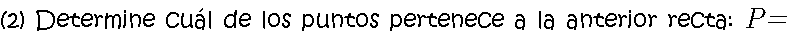
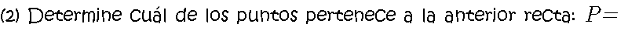

Con la ecuación lineal estándar se conoce la ruta del navío, pero no su posición.

Primero se iguala cada renglón del vector por separado
Luego se despeja el parámetro en cada ecuación y se igualan
Finalmente se escribe la ecuación lineal estándar
 

 Comentarios y sugerencias: gmunoz@udistrital.edu.co
Comentarios y sugerencias: gmunoz@udistrital.edu.co